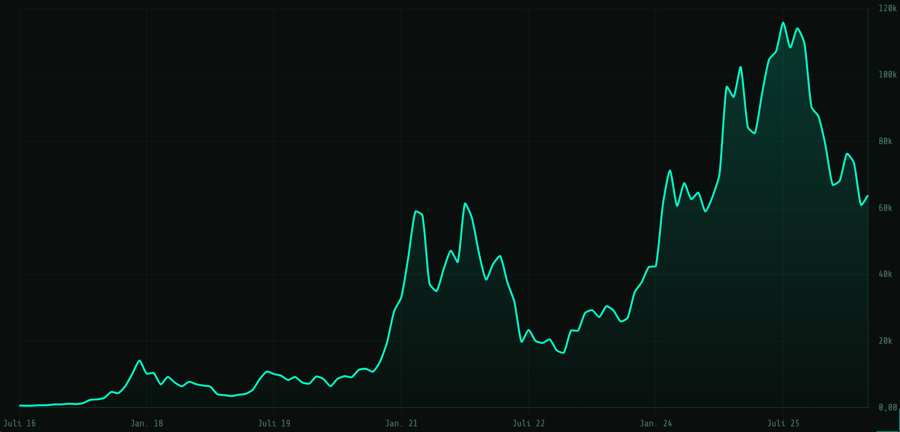
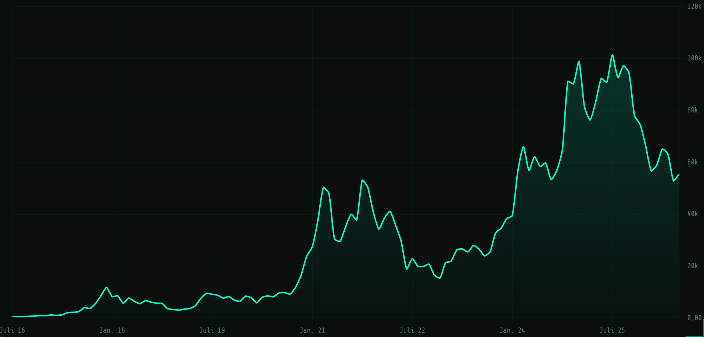
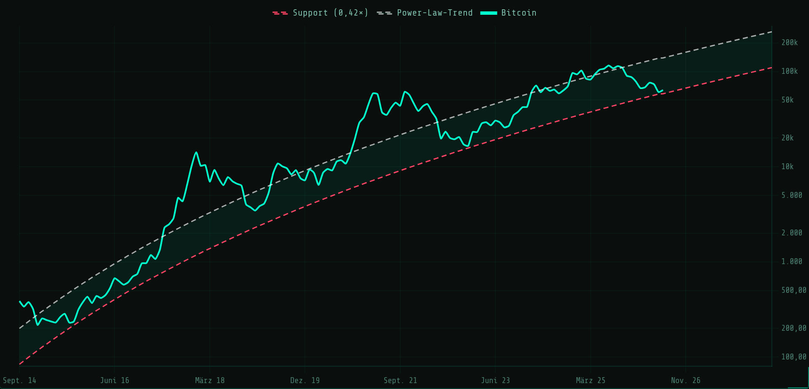

Bitcoin Kursanalyse – Juni 2026: Zurück am Power-Law-Support
Von Alien Investor – Stand: 8. Juni 2026.
Der Markt kapituliert. Nach Wochen mit Rekord-Abflüssen aus den Spot-ETFs ist Bitcoin von rund
77.000 USD Ende Mai auf etwa 63.500 USD gefallen. Die Stimmung ist im Keller,
der Crypto Fear & Greed Index steht bei 8 – Extreme Angst. Genau in dieser Phase lohnt der Blick
weg vom Tagespreis und hin zu den Modellen: Unser Power-Law-Korridor zeigt Bitcoin direkt am
Support, der Zone, in der historisch jeder Zyklusboden lag.
„Diese Analyse dekonstruiert die Diskrepanz zwischen Preis und Wert. Sie ist keine Kaufempfehlung,
sondern ein Werkzeug zur Orientierung im vierdimensionalen Raum aus Zeit, Preis, Adoption und Energie.“
Mini-Fazit in einem Satz
Bitcoin sitzt mit einer Korridor-Position von rund 10 Prozent fast exakt auf dem Power-Law-Support und 54 Prozent unter dem Modell-Trend. Bei Extreme Fear, Rekord-ETF-Abflüssen und einem on-chain nahezu fair bewerteten Markt ist das historisch die Zone der Akkumulation, nicht der Panik.
1) Kurzüberblick & aktuelle Lage
Kursstand: ~63.500 USD (am 3. Juni Tagestief bei 65.708 USD, −6,4 % in 24 Stunden).
Rückgang: von rund 77.000 USD Ende Mai auf unter 64.000 USD – ein scharfer Abverkauf binnen weniger Tage.
Stimmung: Extreme Angst (Crypto Fear & Greed Index bei 8, am 6. Juni noch 12).
Status: Bitcoin am Power-Law-Support, on-chain nahe Fair Value – der Preis fällt, die Bewertung wird günstig.

Bitcoin / USD: der langfristige Kursverlauf zeigt das Muster: explosive Zyklen, gefolgt von Konsolidierung auf höherem Niveau. Momentaufnahme unserer Live-Charts. Aktuelle Werte dort jederzeit abrufbar.

Bitcoin / EUR: für europäische Sparer der relevante Maßstab. Momentaufnahme unserer Live-Charts.
2) Makro-Umfeld: Risk-off und institutionelle Flucht
Der Auslöser dieses Abverkaufs liegt nicht im Netzwerk, sondern in den Kapitalströmen. Institutionelle Adressen
ziehen sich aus Risiko-Assets zurück, und Bitcoin wird dabei behandelt wie ein Hebel-Tech-Wert: zuerst verkauft,
wenn die Nerven blank liegen.
Die Folge: Aus den Spot-ETFs fließt Kapital ab wie nie zuvor, und selbst Unternehmen mit
Bitcoin-Bilanz justieren ihre Positionen. Der Markt preist kurzfristige Liquidität, nicht den langfristigen
Wert eines neutralen, zensurresistenten Kassenbuchs. Genau diese Diskrepanz zwischen Preis und Substanz ist
der Kern dieser Analyse.
3) Wo die institutionellen Käufer sitzen
Ein Großteil der institutionellen ETF-Positionen wurde laut CoinShares-Auswertung im ersten Quartal 2026
im Bereich 52.000 bis 58.000 USD aufgebaut. Das ist aus zwei Gründen entscheidend:
Break-even rückt näher: Bei einem Kurs um 63.500 USD sitzen die zuletzt eingestiegenen Adressen nur noch knapp im Plus. Das erklärt den Verkaufsdruck der nervösen Hände.
Strukturelle Unterstützung: Diese Einstandszone überlappt fast exakt mit dem Power-Law-Support bei rund 58.000 USD. Zwei voneinander unabhängige Methoden zeigen auf denselben Bereich.
Interpretation: Unter dieser Zone wird Bitcoin für die meisten Käufer der letzten Monate zum Verlustgeschäft – erfahrungsgemäß die Region, in der sich Angebot erschöpft.
4) Bewertungsmodell: Das Power Law
Lösen wir uns vom Tagespreis und schauen auf die Mathematik der Wachstumskurve. Die Live-Werte stammen aus
unserem eigenen Power-Law-Tool:
Abweichung vom Trend: Der Kurs liegt rund 54 Prozent unter dem fairen
Modell-Trend von etwa 139.000 USD. So tief war der Abstand zuletzt nach dem FTX-Kollaps.
Korridor-Position: Etwa 10 Prozent – das heißt, der Kurs sitzt fast direkt
auf der Support-Linie (rund 58.000 USD), nicht in der Mitte des Korridors.
Einordnung des Tools: „Am Support – historische Kaufzone." Genau hier lag im November 2022
der Zyklusboden, exakt auf dem 0,42-fachen des Trends.

Bitcoin im Power-Law-Korridor (Log-Skala): weiße Linie = fairer Modell-Trend, rote Linie = Support (Trend × 0,42). Momentaufnahme unserer Live-Charts.
Was ist das Power Law?
Trägt man den Bitcoin-Kurs doppelt-logarithmisch gegen die Zeit seit dem Genesis-Block (3. Januar 2009) auf, liegt er seit über 15 Jahren erstaunlich nah an einer Geraden. Eine Gerade im Log-Log-Diagramm bedeutet: Der Kurs wächst nach einem Potenzgesetz, nicht exponentiell, sondern mit der Zeit abflachend, aber stetig. Der Trend (weiß) ist der faire Modellwert, um den der Kurs in Zyklen pendelt: mal weit darüber (Euphorie), mal deutlich darunter (Bärenmarkt). Der Support (rot, Trend × 0,42) ist die untere Korridorgrenze, die bisher kein Bärenmarkt-Boden nachhaltig unterschritten hat.
Aktuell sitzt der Kurs mit rund 10 Prozent Korridor-Position fast direkt auf dem Support und 54 Prozent unter dem fairen Trend. Genau das waren historisch die Zonen, in denen sich geduldige Akkumulation gelohnt hat. Eine Warnung gehört dazu: Der Support steigt mit dem Modell um etwa 2,8 Prozent pro Monat. Läuft der Kurs nur seitwärts, holt ihn die Support-Linie in wenigen Wochen ein – dann wird das Modell auf die Probe gestellt. Das Power Law ist eine statistische Beobachtung, kein Naturgesetz. Es beschreibt die Vergangenheit gut, ist aber keine Garantie für die Zukunft. Nutze es als Landkarte zur Einordnung, nicht als Versprechen.
5) On-Chain-Forensik: Nahe dem fairen Wert
Was sagen die Ketten-Daten jenseits des Tagespreises?
MVRV-Z-Score (~0,3 – 0,4): Das Verhältnis von Markt- zu realisiertem Wert liegt nahe dem fairen Bereich. Von Überhitzung keine Spur, die spekulative Luft ist raus.
NUPL (~0,28): Der Anteil unrealisierter Gewinne im Netz ist in die Zone aus Hoffnung und Angst gefallen. Solche Werte markieren keine Tops, sondern eher Übergänge zur Bodenbildung.
Institutionelle: Laut CoinShares haben professionelle ETF-Halter im ersten Quartal 2026 ihre Bestände um 17 Prozent reduziert (von rund 313.000 auf 261.000 BTC), der Dollar-Wert fiel um 35 Prozent auf 17,8 Mrd USD. Bemerkenswert: US-Banken bauten gegen den Trend auf.
6) Marktstruktur: Rekord-Abflüsse aus den ETFs
Der Verkaufsdruck kommt klar aus dem ETF-Mantel:
13-Tage-Abfluss-Serie: Vom 15. Mai bis 3. Juni flossen über alle Krypto-ETFs rund 4,4 Mrd USD ab – die längste Abfluss-Serie seit dem ETF-Start 2024. Allein der größte Bitcoin-ETF verlor dabei etwa 3,3 Mrd USD.
Größte Einzelwoche: In der heftigsten Woche zogen Anleger rund 3,4 Mrd USD aus den US-Spot-Bitcoin-ETFs ab – der höchste Wochenabfluss des Jahres.
Symbolwirkung: Selbst Strategy (MSTR) verkaufte Ende Mai 32 Bitcoin für 2,5 Mio USD – der erste Verkauf seit Dezember 2022. Mengenmäßig unbedeutend, aber ein psychologischer Bruch der "Never sell"-Doktrin.
7) Netzwerk-Check: Die physische Wahrheit (Hashrate)
Während der Preis fällt, bleibt die Energie im Netzwerk gewaltig. Die Hashrate liegt bei rund 777 EH/s und die Difficulty bei 138,96 Billionen.
Das Signal: Das Netzwerk sichert Werte mit massiver physischer Energie, unbeeindruckt vom Preis. Miner schalten ihre Maschinen nicht ab, weil der Kurs zuckt. Die fundamentale Integrität bleibt unerschütterlich.
8) Nachkauf-Ranges: Strategischer Denkrahmen
Basierend auf den Daten ergeben sich folgende Szenarien für den rationalen Eigentümer:
Szenario A – Halten am Support (58k – 66k USD):
Das Modell-Szenario. Der Kurs verteidigt den Power-Law-Support und die institutionelle Einstandszone aus Q1. Seitwärts, bis die Abflüsse versiegen. Ideal für DCA.
Szenario B – Bruch des Supports (unter 58k USD):
Fällt der Kurs nachhaltig unter Support und Q1-Einstandszone, droht eine bärische Beschleunigung – und das Power Law selbst stünde auf dem Prüfstand. Kein Modell garantiert eine Rückkehr.
Szenario C – Drehung (über 70k USD):
Enden die ETF-Abflüsse und kehrt Nachfrage zurück, ist der Weg Richtung Trend frei. Der Abstand von 54 Prozent zum fairen Modellwert ist dann Treibstoff.
Risiko-Hinweis: Der Power-Law-Support bei rund 58.000 USD ist die kritische Linie. Fällt er auf Wochenbasis, ist das bärische Risiko erheblich, und kein Modell verspricht eine Rückkehr. Agiere niemals mit Hebel in diesem Umfeld. Nur Spot, nur Cold Storage.
Tools für echte Eigentümer
Wenn du Bitcoin möglichst eigenverantwortlich halten willst, nutze nicht dein Bankdepot:
Bitcoin kaufen in Europa – 21bitcoin:
Bitcoin-only App aus Europa, ideal für DCA und regelmäßiges sats stapeln – ohne Shitcoins.
Mit dem Code ALIENINVESTOR erhältst du dauerhaft 0,2 Prozentpunkte Gebührenreduktion
auf Sofort- und Sparplankäufe. https://alien-investor.org/21bitcoin
₿ Bitcoin in Selbstverwahrung:
Hardware-Wallet statt Börsenkonto. Ich nutze die BitBox – es gibt die klassische BitBox02 und die neue
BitBox für iPhone (Nova). https://alien-investor.org/bitbox
Privacy & Mail:
Für E-Mail, VPN und Cloud nutze ich Proton – datensparsam und ohne Big-Tech-Abhängigkeit. https://alien-investor.org/proton
Hinweis: Bei einigen Links handelt es sich um Affiliate-Links. Wenn du sie nutzt, unterstützt du meine Arbeit,
ohne dass es dich mehr kostet. Danke!
Quellen (Auswahl)
Kurs- und Power-Law-Werte stammen aus unserem eigenen Charts-Tool (api.alien-investor.org). On-Chain-Daten (MVRV-Z-Score, NUPL), ETF-Flows (CoinShares 13F, CoinGlass), Hashrate (CoinWarz) und der Crypto Fear & Greed Index wurden gegen unabhängige Quellen gegengeprüft. Stand: 8. Juni 2026.